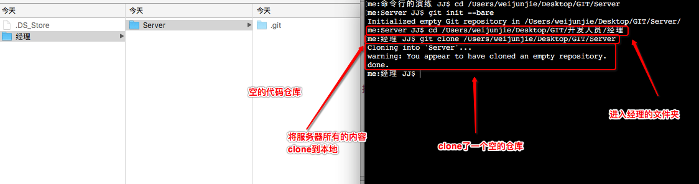
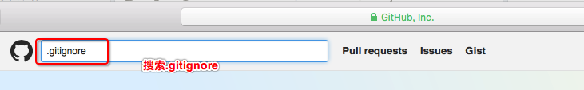
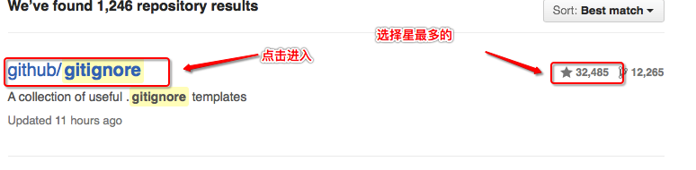
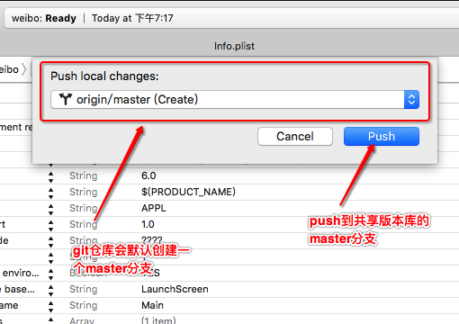

三.项目经理初始化项目1.将服务器完整的内容下载到本地
git clone 服务器地址
2.添加忽略文件".gitignore",使用git需要忽略的一些文件
touch .gitignore

4.github中拷贝需要忽略的内容(github搜索.gitignore->找星最多的,点进去,找到object-c,打开复制)
1.进入github(https://github.com),搜索.gitignore,回车
 2.选择星星最多的项目
 3.找到Object-C点进去

4.复制所有内容到.gitignore文件中
5.将.gitignore添加到缓存区
git add .gitignore
6.将.gitignore提交到服务器
git commit -m "添加了需要忽略的文件"

7.使用xcode的初始化weibo项目放到经理的工作目录中

8.打开项目weibo项目,所有文件已经在暂缓区了

9.使用xcode提交到本地版本库(Source control -> commit),提交仅仅是提交到了本地版本库

10.使用xcode上传到共享版本库(Source control -> push)
